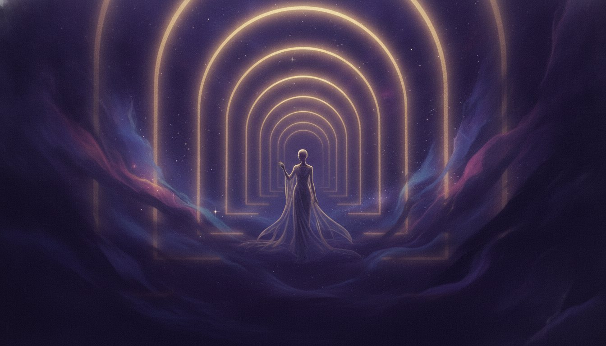

Bring your question. We're ready right now
Whatever you're carrying, from love and timing to a person who has passed or the path ahead, a live psychic is ready to answer the moment you ask. Day or night, someone caring is here right now.
Choose your path
Six ways to be read, each with its own gift. Follow the one that matches the question you carry.
Love & Relationships
The heart's questions answered with tenderness. Connection, timing, and the truth beneath the silence.
Explore →Tarot
Seventy-eight cards, laid to your question. A language of image and symbol that names what you already sense.
Explore →Mediumship
A gentle bridge to those who have crossed. Messages, signs, and the reassurance that love outlasts distance.
Explore →Horoscopes & Astrology
Your chart read as a map. What the planets set in motion, and how to move with the season you are in.
Explore →Career & Purpose
The work you are meant for, and the next honest step toward it. Clarity for crossroads and quiet stalls alike.
Explore →Past Lives & Dreams
The threads that reach back further than this life. Recurring dreams, old patterns, and the soul's longer story.
Explore →How a reading unfolds
Whichever door you choose, the arc is the same. You arrive with a question, we match you with a psychic whose gift fits it, and the two of you connect by phone, chat, or video. What comes back is insight you can act on, offered with warmth and never with pressure.
Every psychic here has been rigorously vetted. Fewer than one in twenty applicants is ever accepted, so the voice on the other end has earned the trust you place in it.
See how it works →
So many paths. Tonight, only one is yours.
Pick a door and walk through.
New members read from $1 per minute, backed by our satisfaction guarantee. America's most trusted psychic service since 1989.
Get Your ReadingNew members from $1/min · Satisfaction guaranteed.
Satisfied or your money back. For entertainment. 18+.